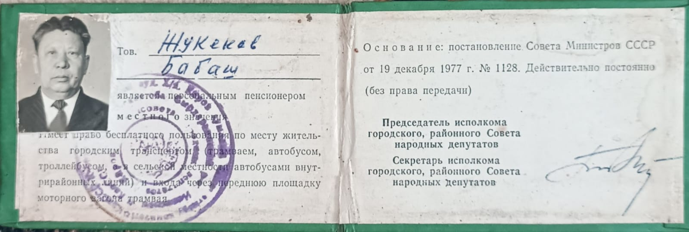
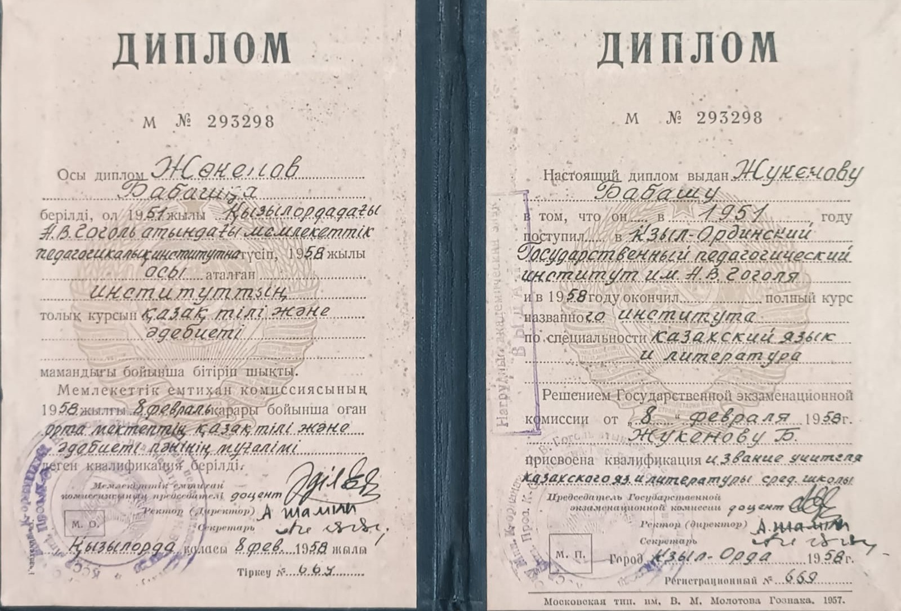
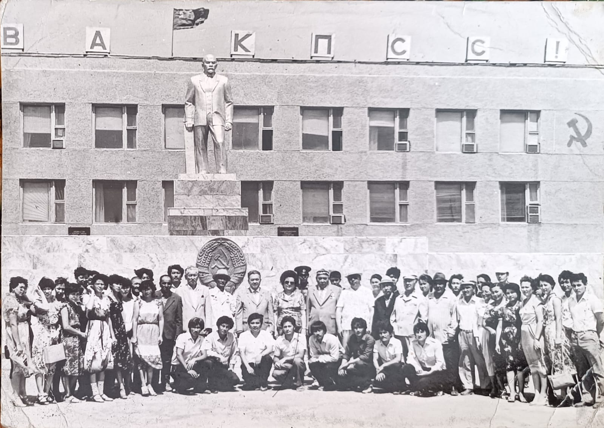
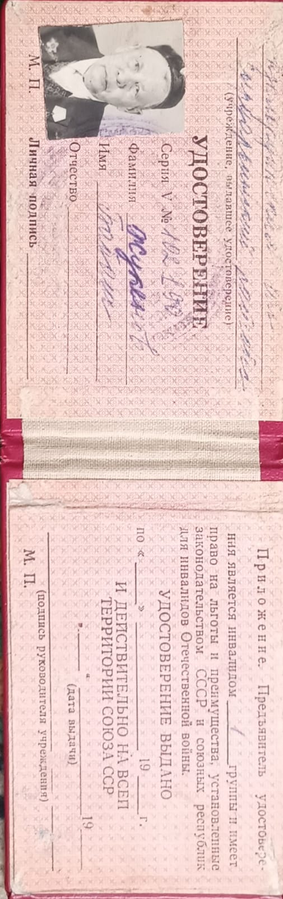

Военное поколение
Юбилейные медали Победы подтверждают связь с Великой Отечественной войной 1941-1945 годов.
Памяти человека, чья история сохранилась в документах и в семье
Этот лендинг собран по семейным фотографиям, удостоверениям и наградам. Он фиксирует путь человека поколения войны: службу, общественную работу, партийную школу, уважение современников и память, которая продолжается в роду.

О жизни
По сохранившимся документам видно, что Бабаш Жукенов родился в 1921 году. Его имя связано с военной эпохой и послевоенной общественной работой. В семейном архиве сохранились военный билет, партийный билет, удостоверение об окончании партийной школы и несколько наградных документов разных лет.
Архив показывает не только официальный путь, но и человеческую сторону: строгие портреты, групповые снимки, пожелтевшие страницы удостоверений и аккуратно хранимые медали. Это история о достоинстве, служении и долгой памяти.
Бабаш Жукенов туралы сақталған құжаттар мен суреттер оның тек өз дәуірінің адамы емес, әулет жадында орны бөлек тұлға болғанын да аңғартады. Осындай мұра арқылы кейінгі ұрпақ атаның еңбегін, мінезін, елге қызмет еткен жолын тереңірек түсіне алады.
Юбилейные медали Победы подтверждают связь с Великой Отечественной войной 1941-1945 годов.
Партийные документы фиксируют вступление в ноябре 1946 года и дальнейший путь служения.
В 1951-1952 годах завершена районная вечерняя партийная школа; позднее оформлен статус персонального пенсионера.
Память о человеке держится не только на датах. Она живет в лицах на старых снимках, в следах печатей на документах и в уважении, с которым семья хранит его историю.
Хронология
Год рождения указан в партийном билете и других архивных материалах.
Участие в поколении Победы подтверждается государственными юбилейными наградами к 50-летию и 60-летию Победы.
По партийному билету дата вступления приходится на ноябрь 1946 года.
Сохранилось удостоверение об окончании районной вечерней партийной школы при райкоме КП(б) Казахстана.
Архивное удостоверение указывает на статус персонального пенсионера союзного значения.
В архиве сохранились документы на юбилейные награды СССР и Республики Казахстан, а также медаль Маршала Жукова.
Награды

Архив



Video
This section opens the preserved family video through Google Drive. You can watch it here or open it on a separate page.
This block contains a preserved video about your grandfather. If the embedded preview does not open, use the button below.
Open VideoГазет мақалалары
Бұл бөлімде отбасылық архивтен табылған газет және баспа материалдарының скан нұсқалары жеке көрсетілді.
Шежіре
Здесь на главной странице показаны дедушка, бабушка и все ветви потомков. Дерево строится динамически и может расти дальше по поколениям.
Ветви рода
Открыть полную страницу шежіре